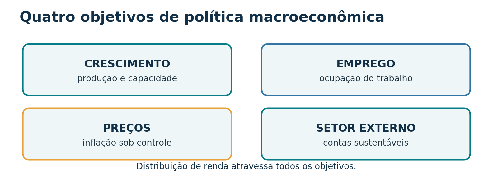
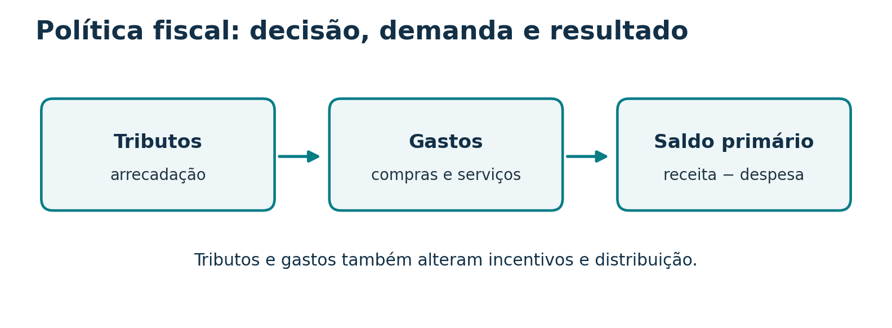
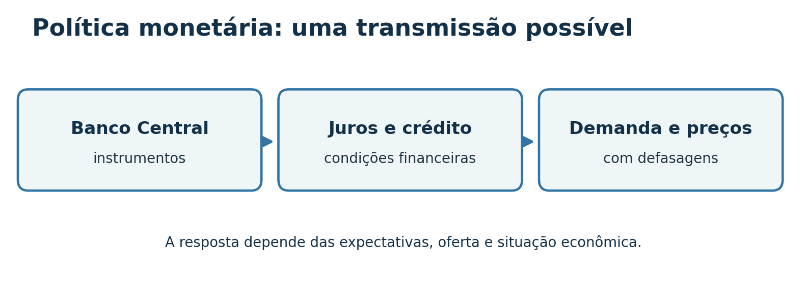
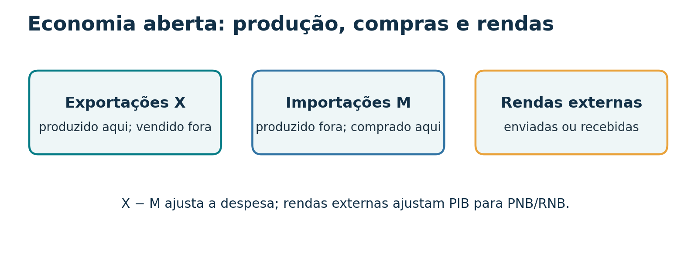
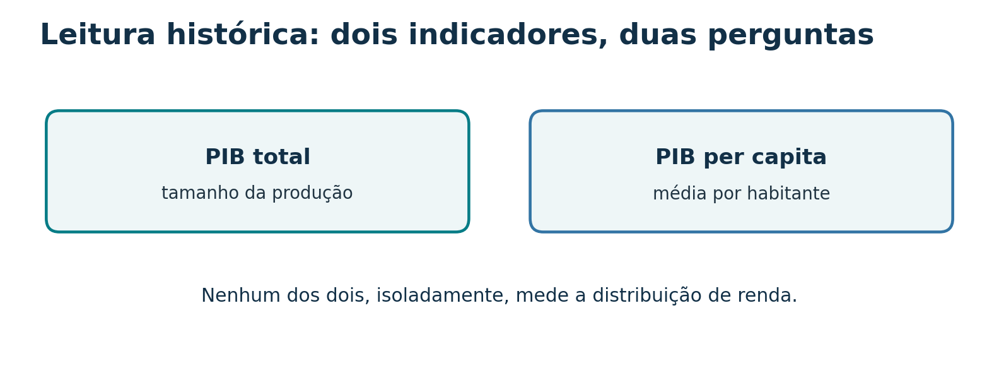
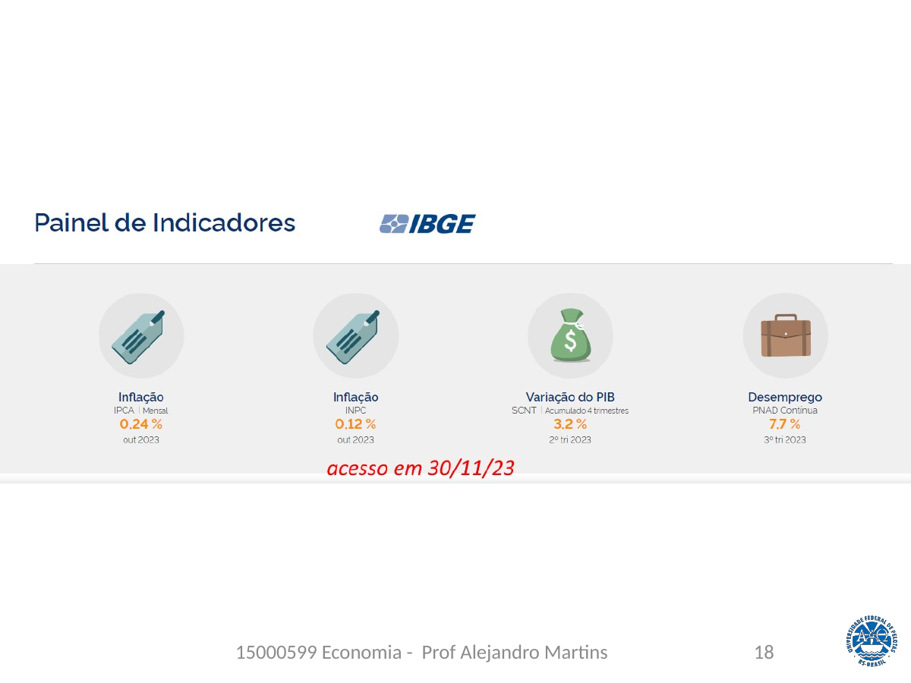
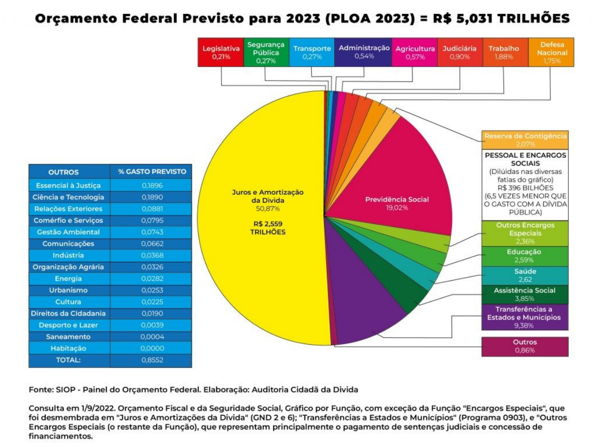

Da economia inteira às decisões públicas
A macroeconomia estuda a evolução conjunta de produção, renda, emprego, preços e relações com outros países. Políticas econômicas tentam influenciar esses resultados. Para saber se funcionaram, precisamos medi-los com critérios coerentes: é aí que a contabilidade nacional entra na segunda parte da aula.
Agregados e horizonte de análise
O que se observa
Produto e renda: valor produzido e renda gerada. Consumo, poupança e investimento: usos da renda e formação de capacidade produtiva. Emprego e desemprego: uso do trabalho. Nível geral de preços: variação do poder de compra da moeda.
Juros, moeda, câmbio e balanço de pagamentos: condições financeiras e relações econômicas com o exterior. Uma variação isolada não conta a história inteira: compare período, unidade, preços e contexto.
Curto e longo prazo
Os slides distinguem problemas de estabilização, como desemprego e inflação, de questões de desenvolvimento e capacidade produtiva, como tecnologia, qualificação e indústria. Na prática, as duas escalas se influenciam.
Exemplo: uma queda de investimento reduz a demanda agora e pode diminuir a capacidade de produção mais adiante.
Metas macroeconômicas e conflitos entre objetivos

Crescimento e desenvolvimento
Crescimento: aumento do produto ou da renda, em termos reais quando se compara volume ao longo do tempo. Desenvolvimento: inclui condições de vida, distribuição, saúde, educação e ambiente. Produzir mais pode ajudar, mas não descreve sozinho quem se beneficia.
Emprego e inflação
Mais atividade pode elevar o emprego. Quando setores operam perto da capacidade e os insumos escasseiam, pressões de custo podem aparecer. Ganhos de produtividade e condições de oferta mudam esse efeito: não há uma troca fixa válida para toda época.
Estabilidade dos preços
Inflação é aumento persistente e generalizado dos preços. Os slides distinguem pressões de demanda, de custos e inerciais. Preços estáveis ajudam contratos e planejamento; inflação elevada tende a atingir mais quem dispõe de menor proteção financeira.
Equilíbrio externo e distribuição
Déficits externos persistentes exigem financiamento; superávits e entradas de capital também trazem efeitos sobre câmbio e política econômica. A distribuição depende de salários, tributos, serviços públicos e oportunidades.
Escolhas públicas: uma medida pode favorecer um objetivo e dificultar outro. A análise exige identificar mecanismo, prazo e grupos afetados, sem tratar qualquer relação como automática.
Quatro mercados organizam a análise
| Mercado | Variáveis destacadas | Pergunta de aula |
|---|---|---|
| Bens e serviços | Produto e nível de preços | Quanto se produz e compra? |
| Trabalho | Emprego e salários | Quem encontra trabalho e a que remuneração? |
| Financeiro e monetário | Juros, crédito e moeda | Quanto custa financiar gastos? |
| Divisas | Taxa de câmbio | Qual o preço relativo da moeda estrangeira? |
Conexão: uma mudança nos juros pode afetar crédito e investimento; estes afetam gasto, produção e emprego. O câmbio altera custos e competitividade de forma diferente entre setores.
Política fiscal: tributos, gastos e resultado das contas públicas

Arrecadação: tributos afetam renda disponível, custos e incentivos. Gastos: compras do governo demandam produção; transferências redistribuem renda, mas não entram diretamente em G na fórmula do PIB. Tributos progressivos e a composição dos serviços públicos podem alterar a distribuição.
Expansão fiscal
Aumento de gastos ou redução de tributos tende a sustentar a demanda, dependendo da capacidade ociosa, da reação dos agentes, das importações e da forma de financiamento.
Contração fiscal
Redução de gastos ou aumento de tributos tende a conter a demanda no curto prazo. Os efeitos sobre inflação, dívida e crescimento dependem do contexto e da composição da medida.
Não confundir: déficit é resultado de fluxo em um período; dívida é estoque acumulado. Resultado primário exclui juros da dívida na sua apuração; resultado nominal os incorpora segundo a metodologia fiscal pertinente. Os slides 19–21 usam valores de 2023 e servem como exercício de leitura histórica, não como situação atual.
Política monetária: moeda, juros e crédito

| Instrumento citado nos slides | Como entender | Canal principal |
|---|---|---|
| Operações de mercado aberto | Compra e venda de títulos pelo Banco Central | Liquidez e condições de juros |
| Reservas compulsórias | Parcela de recursos que instituições recolhem | Liquidez bancária e crédito |
| Redesconto / assistência de liquidez | Operações do Banco Central com bancos | Liquidez do sistema |
| Taxa básica e comunicação | Orientação das taxas de mercado e expectativas | Financiamento, consumo e investimento |
Exemplo didático: juros maiores podem tornar financiamento mais caro, reduzir certas compras a prazo e moderar a demanda. O repasse aos preços não é instantâneo nem garantido na mesma intensidade.
A enumeração preserva os instrumentos do material, mas a prática operacional pode evoluir. A ideia de que política fiscal sempre demora e monetária sempre age de imediato, no slide 15, é uma simplificação; ambas têm prazos de decisão e de efeito.
Políticas cambial, comercial e de rendas

Câmbio e comércio
Política cambial trata do regime e das intervenções na taxa de câmbio. Política comercial inclui tarifas, regras, cotas e incentivos que afetam importações e exportações. Uma desvalorização cambial pode beneficiar exportadores e elevar o custo doméstico de insumos importados.
Política de rendas
Intervenções diretas em salários e preços tentam influenciar sua formação. O material menciona também lucros, juros e aluguéis. Para avaliar uma medida, pergunte: qual preço está sendo controlado, por quanto tempo e que efeitos pode haver sobre oferta e contratos?
Duas contas externas: X − M ajusta o PIB pela despesa. Rendas primárias recebidas ou enviadas ao exterior ajustam o PIB para chegar à renda nacional bruta (PNB na terminologia dos slides). Uma importação não é a mesma coisa que uma remessa de lucros.
Por que a política econômica precisa da contabilidade nacional?
As metas anteriores só podem ser discutidas seriamente quando as variáveis têm definição, período e unidade claros. O PIB mede produção, mas não equivale ao orçamento público, ao estoque de dívida ou ao balanço de pagamentos. Cada um desses registros responde a outra pergunta.
| Questão | Conta ou indicador |
|---|---|
| Quanto o país produziu? | PIB, por produto, despesa ou renda. |
| Como evoluem os preços? | Índices de preços. |
| Qual foi o resultado fiscal? | Receitas e despesas públicas conforme a metodologia. |
| Como o país se relaciona financeiramente com o exterior? | Balanço de pagamentos. |
Um número, três portas de entrada
Imagine uma ilha que só produz pão. Durante um ano, um agricultor planta trigo, um moinho transforma o trigo em farinha e uma padaria assa o pão, que as famílias compram. Quanto essa ilha produziu? Há três jeitos de responder, e os três precisam chegar ao mesmo número.
Produto
Quanto cada empresa acrescentou?
Olhe no caixa das empresas, descontando o que compraram de outras empresas.
100 + 300 + 600 = 1.000
Despesa
Quem comprou a produção final?
Olhe no bolso de quem gastou com bens e serviços finais.
famílias compraram pão: 1.000
Renda
Quem recebeu o valor gerado?
Olhe nos salários, juros, aluguéis e lucros pagos pelas empresas.
700 + 50 + 70 + 180 = 1.000
Como estudar esta parte: primeiro entenda o conceito com a ilha do pão, que tem números pequenos e redondos. As fórmulas completas aparecem depois, e cada símbolo vem traduzido em palavras. As cores são sempre as mesmas: verde-azulado para produto, azul para despesa e âmbar para renda.
O que é o PIB, palavra por palavra
Produto Interno Bruto é o valor de mercado de todos os bens e serviços finais produzidos dentro do território de um país durante um período.
Cada expressão sublinhada é um filtro. Se uma transação não passa por algum deles, não entra no PIB.
| Expressão | O que quer dizer | O que fica de fora |
|---|---|---|
| Valor de mercado | Somamos reais, não unidades. Pães e cortes de cabelo não se somam, mas R$ 1.000 em pão e R$ 200 em cortes, sim. | Atividades sem preço de mercado, como a faxina que cada um faz na própria casa (limite conhecido do PIB). |
| Finais | Só o que chega a quem vai usar: consumir, investir ou exportar. | Insumos. A farinha usada pela padaria já está dentro do preço do pão. |
| Produzidos | Produção nova. O PIB mede o que foi feito, não o que trocou de mãos. | Revenda de carro usado, compra de ações, venda de imóvel antigo. Só a comissão do corretor entra, porque é um serviço novo. |
| Dentro do território (“Interno”) | O critério é onde se produziu, não a nacionalidade do dono. | O que uma empresa brasileira produz na Argentina (entra no PIB argentino). |
| Durante um período | O PIB é um fluxo: como a água que passa pela torneira em um ano. | Estoques, como riqueza acumulada ou dívida: são a água que está na caixa. |
| Bruto | Não se desconta o desgaste das máquinas e prédios (depreciação). | Nada fica de fora: “bruto” só avisa que a depreciação ainda está dentro. |
Teste rápido: entra no PIB deste ano?
Escolha uma resposta em cada cartão. A explicação aparece em seguida.
Pão comprado por uma família para o café da manhã.
Bem final, produzido no ano e no território. É o caso mais simples.
Farinha comprada pela padaria para fazer pão.
É consumo intermediário: já está incluída no preço do pão. Contá-la de novo seria dupla contagem.
Carro usado revendido por R$ 40 mil.
O carro foi produzido em outro ano e já entrou no PIB daquele ano. A comissão da revendedora, porém, é serviço novo e entra.
Ações compradas na bolsa de valores.
Um papel trocou de dono; nada foi produzido. A taxa da corretora é serviço e entra.
Aula dada por uma professora de escola pública.
É um serviço final produzido pelo governo (vai para G). Como não tem preço de venda, é medido pelo custo, principalmente o salário.
Benefício do Bolsa Família pago a uma família.
É transferência de renda, não pagamento por algo produzido. Quando a família gastar o dinheiro em pão, o pão entra, como consumo.
Pães assados em dezembro que ainda estão na prateleira.
Foram produzidos no ano, mesmo sem venda. Entram como variação de estoques, dentro do investimento (I).
Soja colhida no Rio Grande do Sul por uma empresa estrangeira.
Entra no PIB brasileiro: o critério é o território. O lucro que a empresa mandar para fora vai aparecer na diferença entre PIB e PNB (Passo 7).
Por que as três contas sempre fecham
Siga o dinheiro na ilha. Duas coisas andam em sentidos opostos: bens e trabalho de um lado, dinheiro do outro.
Siga R$ 10 gastos em pão
A padaria recebe 10. Usa 4 para pagar a farinha e fica com 6, que distribui em salários, juros, aluguéis e lucro. O moinho recebe os 4: paga 1 pelo trigo e distribui 3. O agricultor recebe 1 e o distribui.
6 + 3 + 1 = 10. Todo o gasto virou renda de alguém.
Quem garante o fechamento é o lucro
Salários, juros e aluguéis são combinados antes. O lucro é o que sobra depois de pagar tudo. Se a padaria vender o pão mais caro, seu lucro sobe exatamente na mesma quantia; se vender mais barato, cai.
Como o lucro é a sobra, a renda total sempre iguala o valor produzido. Não é coincidência: é assim que se define lucro.
O símbolo ≡ indica identidade: algo verdadeiro por definição, em qualquer economia, porque as três contas registram o mesmo fluxo. Não é uma teoria sobre como a economia se comporta. Nas estatísticas reais, fontes diferentes geram uma pequena discrepância, que o órgão estatístico ajusta.
Produto: somar só o que cada etapa acrescentou
A tentação é somar o que todas as empresas venderam: 100 (trigo) + 400 (farinha) + 1.000 (pão) = 1.500. Mas o pão de 1.000 já contém a farinha, que já contém o trigo. O gráfico mostra o problema.
Para cada empresa usamos três conceitos:
| Empresa | VBP (vende) | CI (compra de insumos) | VA = VBP − CI |
|---|---|---|---|
| Agricultor (trigo) | 100 | 0 | 100 |
| Moinho (farinha) | 400 | 100 | 300 |
| Padaria (pão) | 1.000 | 400 | 600 |
| Total da ilha | 1.500 | 500 | 1.000 |
E quando há impostos?
Suponha que o governo cobre 100 de imposto sobre o pão. O consumidor passa a pagar 1.100, mas a padaria continua ficando com 1.000: os 100 vão para o governo. O VA das empresas não muda; ele é medido pelo que fica com o produtor (preço básico). Para chegar ao que o comprador pagou (preço de mercado), soma-se o imposto:
Subsídio é o contrário de imposto: o governo paga parte do preço para o produtor, e o comprador paga menos. Por isso entra com sinal de menos. O índice “pm” significa “a preços de mercado”.
Despesa: quem comprou a produção final?
Agora a pergunta é outra: não “quem fez?”, mas “quem pagou pelos bens finais?”. Cada compra final vai para uma de cinco gavetas, conforme o comprador e o uso.
Consumo das famílias
Pergunta: uma família comprou para usar?
Pão, corte de cabelo, passagem de ônibus, mensalidade.
Imóvel novo comprado por família vai para I, não C.
Investimento
Pergunta: foi produzido agora para ajudar a produzir depois?
Forno, máquina, prédio, estrada. Inclui a variação de estoques.
Comprar ações ou um terreno não é investimento para o PIB.
Gastos do governo
Pergunta: o governo pagou por bens ou serviços?
Aulas, consultas no SUS, policiamento, material de escritório.
Aposentadorias e Bolsa Família são transferências: não entram em G.
Exportações
Pergunta: foi produzido aqui e comprado por alguém de fora?
Soja vendida à China, pão comprado por turista estrangeiro.
Importações
Pergunta: foi produzido lá fora e comprado por nós?
Celular chinês, trigo argentino, viagem ao exterior.
Entra com sinal de menos (veja abaixo por quê).
Por que o M tem sinal negativo?
Uma família compra um celular importado por 50. Quem mede o consumo registra: C sobe 50. Mas o celular foi produzido na China, não na ilha. Para o PIB não ficar inflado, esses 50 precisam ser retirados: M sobe 50.
+50 em C − 50 em M = efeito zero no PIB
Então o M não quer dizer que “importar reduz o PIB”. É uma correção: C, I e G registram tudo o que gastamos, inclusive em produtos estrangeiros; o PIB só quer o que foi produzido aqui.
Na ilha do pão
Todo o pão foi comprado por famílias. Não há governo, investimento nem comércio exterior.
C = 1.000; I = G = X = M = 0
PIB = 1.000
Mesmo número da ótica do produto. No Passo 6 você vai mudar essa economia e ver as gavetas se encherem.
Exercício: em que gaveta entra?
Família compra geladeira fabricada em Canoas.
Consumo das famílias: bem final, produzido no país, para uso da família.
Padaria compra forno novo fabricado em Pelotas.
Investimento: o forno dura anos e serve para produzir mais pão. Não é insumo porque não se gasta em um só ciclo.
Prefeitura paga o salário de uma médica do posto de saúde.
Gasto do governo: o serviço de saúde é produzido e medido pelo seu custo.
Governo paga uma aposentadoria.
Fica fora: é transferência, não pagamento por produção. Quando o aposentado gastar, o gasto aparece em C.
Turista uruguaio almoça em um restaurante de Pelotas.
Exportação de serviço: produzido aqui, pago por não residente. Não importa que tenha sido consumido em território brasileiro.
Montadora fabrica carros que ficam no pátio sem vender.
Investimento, como variação de estoques. A produção aconteceu; a contabilidade trata a própria empresa como “compradora” do estoque.
Família compra celular fabricado na China.
Pegadinha: aparece em C e em M, com sinais opostos. O efeito líquido no PIB é zero.
Investidor compra ações da Petrobras na bolsa.
Fica fora: é aplicação financeira, troca de dono de um papel. No dia a dia se diz “investir”, mas para o PIB investimento é bem de capital novo.
Nota: nas contas oficiais, obras públicas (uma escola nova, uma estrada) entram em investimento, e G fica com o consumo do governo. Alguns livros colocam tudo o que o governo compra em G. Em exercícios, siga a convenção do enunciado.
Renda: para onde foi o valor adicionado?
O valor adicionado de cada empresa não fica parado: ele paga quem ajudou a produzir. Cada fator de produção recebe um tipo de renda.
A tabela abaixo mostra como cada empresa da ilha dividiu o seu VA. Ela é a chave para entender por que produto e renda são iguais:
| Empresa | Salários | Juros | Aluguéis | Lucros | Soma da linha = VA |
|---|---|---|---|---|---|
| Agricultor | 70 | 0 | 0 | 30 | 100 |
| Moinho | 200 | 20 | 30 | 50 | 300 |
| Padaria | 430 | 30 | 40 | 100 | 600 |
| Soma da coluna = renda | 700 | 50 | 70 | 180 | 1.000 |
O índice “cf” quer dizer a custo de fatores: o valor medido pelo que os fatores de produção receberam. Se houver imposto sobre o pão, o comprador paga mais do que os fatores recebem; a diferença foi para o governo. Para chegar ao preço de mercado, soma-se:
Cuidado com a depreciação
O lucro dessa conta é bruto: ainda inclui a parte que a padaria separa para repor o forno quando ele se desgastar. Por isso, para calcular o PIB, não se desconta a depreciação. Ela só é descontada quando queremos um produto líquido (Passo 7).
Como o IBGE chama essas rendas
Nas contas oficiais aparecem remuneração dos empregados (salários e contribuições), excedente operacional bruto (EOB, de onde saem juros, aluguéis e lucros) e rendimento misto bruto (autônomos, em que não se separa salário de lucro). A lógica é a mesma da tabela acima.
Laboratório: mude a ilha e veja as três contas
Ative cada mudança e observe as três colunas. Algumas mudanças alteram o PIB; outras só mudam a composição. Em todos os casos, as três óticas continuam iguais.
Produto
Despesa
Renda
Hipóteses do laboratório: o imposto incide só sobre o pão; o forno é feito sem insumos comprados; a geleia chega pronta do exterior. Os números são didáticos.
PIB, PNB, PNL: o nome do agregado é um código
Os livros e os slides falam em PIB, PNB, PIL, PNL, “a preços de mercado”, “a custo de fatores”. Parece uma sopa de letras, mas cada nome é a combinação de três chaves independentes. Entendendo as chaves, qualquer agregado se deduz.
| Chave | Pergunta | Como passar de um lado ao outro |
|---|---|---|
| Interno ↔ Nacional PIB ↔ PNB | Onde foi produzido ou de quem é a renda? | PNB = PIB − RLEE RLEE = renda enviada ao exterior − renda recebida do exterior (lucros, juros, salários) |
| Bruto ↔ Líquido PIB ↔ PIL | Com ou sem o desgaste do capital? | Líquido = Bruto − depreciação |
| Mercado ↔ Fatores pm ↔ cf | Pelo preço que o comprador pagou ou pelo que os fatores receberam? | cf = pm − impostos indiretos + subsídios |
Continuemos a ilha, agora com o imposto de 10% do laboratório (PIBpm = 1.100). Duas informações novas: o moinho pertence a um estrangeiro, que envia 50 de lucro para fora, e os ilhéus recebem 20 de juros de aplicações no exterior. Os fornos e máquinas da ilha se desgastaram em 60 no ano.
Por que no Brasil o PNB é menor que o PIB?
Multinacionais instaladas aqui enviam lucros às matrizes, e o país paga juros sobre dívida externa. Como o Brasil envia mais renda do que recebe, a RLEE é positiva e o PNB fica abaixo do PIB.
Não confunda com X − M
Exportações e importações são compra e venda de produtos e já estão dentro do PIB e do PNB. A RLEE trata de rendas (lucros, juros, salários) que cruzam a fronteira. São contas diferentes.
Terminologia atual: o IBGE usa “Renda Nacional Bruta (RNB)” no lugar de PNB, e “preços básicos” em vez de “custo de fatores” (os conceitos são próximos, mas não idênticos: preços básicos excluem só os impostos sobre produtos). Mantivemos os nomes dos slides porque são os mais usados em livros-texto e provas.
PIB nominal, real e per capita
O PIB é medido em reais. Se ele sobe, pode ser porque se produziu mais ou porque os preços subiram. Na ilha, com um único bem final, isso fica visível:
| Pães produzidos | Preço do pão | PIB nominal quantidade × preço do ano | PIB real quantidade × preço do ano 1 | |
|---|---|---|---|---|
| Ano 1 | 1.000 | R$ 1,00 | 1.000 | 1.000 |
| Ano 2 | 1.050 | R$ 1,10 | 1.155 | 1.050 |
| Variação | +5% | +10% | +15,5% | +5% |
Nominal e real
Nominal: valor aos preços do próprio ano. Mistura quantidade e preço. Real: valor a preços de um ano-base fixo. Mostra só a quantidade.
A economia cresceu 5%, não 15,5%. O resto foi inflação.
Deflator do ano 2 = 1.155 ÷ 1.050 = 1,10, ou seja, preços 10% maiores. Aproximação útil: crescimento nominal ≈ crescimento real + inflação (5% + 10% = 15%, perto dos 15,5% exatos).
Per capita
PIB per capita = PIB ÷ população. Se a ilha passou de 100 para 102 habitantes, o PIB real por pessoa foi de 10,00 para 10,29: cresceu 2,9%, menos que o PIB total.
É uma média: não diz quanto cada pessoa recebe nem como a renda se distribui. Para comparar países, câmbio de mercado e paridade do poder de compra (PPC) respondem a perguntas diferentes.
Precisão histórica: o slide antigo do IDH apresenta pesos e componentes de uma metodologia anterior. Nesta síntese, o IDH aparece só como lembrete de que desenvolvimento exige indicadores além do PIB.
Tradutor de símbolos
Volte aqui sempre que uma letra de fórmula não fizer sentido.
| Símbolo | Nome | Em palavras |
|---|---|---|
| Y | Produto ou renda | Os livros usam a mesma letra para as duas coisas justamente porque, na contabilidade, são o mesmo número. |
| ≡ | Identidade | Igual por definição, sempre, em qualquer economia. |
| VBP | Valor bruto da produção | Tudo o que uma empresa produziu, a preço de venda. |
| CI | Consumo intermediário | Insumos comprados de outras empresas e gastos na produção. |
| VA (VAB) | Valor adicionado (bruto) | VBP − CI: o que a empresa acrescentou. |
| Σ | Somatório | “Some para todos.” |
| C | Consumo das famílias | Gastos das famílias com bens e serviços finais. |
| I | Investimento (formação bruta de capital) | Máquinas, construções e variação de estoques. |
| G | Gastos do governo | Consumo do governo: serviços públicos, medidos pelo custo. Sem transferências. |
| X, M | Exportações, importações | Vendas ao exterior; compras do exterior (descontadas). |
| II, Sub | Impostos indiretos, subsídios | Tributos embutidos nos preços; pagamentos do governo que baixam preços. |
| RLEE | Renda líquida enviada ao exterior | Renda enviada − renda recebida. Separa PIB de PNB. |
| D | Depreciação | Desgaste do capital no período. Separa bruto de líquido. |
| pm, cf | Preços de mercado, custo de fatores | Com ou sem impostos indiretos líquidos. |
| EOB | Excedente operacional bruto | Nome oficial para a renda do capital antes de descontar depreciação. |
Oito confusões frequentes em prova
| Parece que… | Na verdade… |
|---|---|
| Somar o faturamento de todas as empresas dá o PIB. | Isso conta os insumos várias vezes. Some só valores adicionados ou só bens finais (Passo 3). |
| Importar reduz o PIB. | O M apenas retira o que já tinha sido somado em C, I ou G. A geleia importada do laboratório não muda o PIB (Passo 6). |
| Aposentadorias e Bolsa Família entram em G. | São transferências. Entram só quando gastas, como consumo (Passo 4). |
| Comprar ações ou um terreno é investimento. | Para o PIB, investimento é bem de capital novo ou aumento de estoque (Passo 4). |
| Para calcular o PIB pela renda, desconta-se a depreciação. | O PIB é bruto. A depreciação só sai quando se quer o produto líquido (Passos 5 e 7). |
| PIB e PNB diferem por exportações e importações. | Diferem pela renda enviada e recebida do exterior (RLEE). X − M está dentro dos dois (Passo 7). |
| O PIB nominal subiu 15%, então a economia cresceu 15%. | É preciso descontar a inflação. Crescimento se mede pelo PIB real (Passo 8). |
| PIB per capita alto significa que todos vivem bem. | É uma média. Não mostra distribuição nem atividades fora do mercado (Passos 1 e 8). |
Mapa de uma página e um exercício resolvido
Produto
PIBpm = Σ VA + II − Sub
Some o que cada empresa acrescentou.
Despesa
PIBpm = C + I + G + X − M
Some quem comprou os bens finais.
Renda
PIBpm = sal + jur + alug + luc + II − Sub
Some o que os fatores receberam.
Exercício resolvido
Dados de uma economia, em bilhões: C = 500; I = 150; G = 200; X = 80; M = 90; impostos indiretos = 120; subsídios = 20; depreciação = 40; renda enviada ao exterior = 35; renda recebida do exterior = 5. Calcule o PIBpm, o PNBpm e a renda nacional (PNLcf).
- Escolha a ótica pelos dados. Temos C, I, G, X e M: ótica da despesa. PIBpm = 500 + 150 + 200 + 80 − 90 = 840.
- Gire a chave interno → nacional. RLEE = 35 − 5 = 30. PNBpm = 840 − 30 = 810.
- Gire a chave bruto → líquido. PNLpm = 810 − 40 = 770.
- Gire a chave mercado → fatores. Impostos indiretos líquidos = 120 − 20 = 100. PNLcf = 770 − 100 = 670 = renda nacional.
Confira: fazendo os passos em outra ordem (primeiro tirar impostos, depois RLEE, depois depreciação), o resultado final é o mesmo 670.
Como ler os gráficos sem misturar períodos e medidas

| Figura do material | Questão didática | Cuidado |
|---|---|---|
| Painel IBGE e indicadores de 2023 | Inflação e crescimento do PIB são a mesma coisa? | Um é variação de preços; outro trata do produto. Distinguir indicador, data e unidade. |
| Impostômetro, orçamento e resultado previdenciário de 2023 | Arrecadação é igual a PIB ou saldo fiscal? | Não. São perímetros, períodos e conceitos diferentes; orçamento previsto não é gasto realizado. |
| Infográficos internacionais de PIB e dívida | Qual comparação é feita: total, per capita, PPC, nominal ou dívida/PIB? | Conferir ano, moeda, fonte, metodologia e se o valor é realizado ou projetado. |
| Visualizações sobre riqueza | PIB anual equivale a riqueza acumulada? | Não. Produto é fluxo; riqueza e dívida são estoques. |
Ver quatro figuras originais da apresentação para análise em aula


Algumas figuras exibem projeções para 2026 feitas em datas específicas. Esta aula não reproduz suas cifras como fatos observados. Use as imagens originais da apresentação para um exercício de crítica de fontes.
Origem das contas e uma ponte com Keynes
Os slides situam a consolidação da análise dos grandes agregados no contexto da crise dos anos 1930 e da obra de John Maynard Keynes. Também apresentam a construção histórica das contas nacionais brasileiras e a atuação do IBGE. A função didática desta seção é ligar a mensuração do PIB à pergunta: o que determina o nível de produção e emprego?
Consumo depende da renda
No modelo simplificado do apêndice, C = Ca + cY: Ca é o consumo autônomo e c é a propensão marginal a consumir, entre zero e um. Se a renda cresce 100 e c = 0,8, o consumo induzido cresce 80, sob as hipóteses do modelo.
Investimento pode oscilar
Expectativas sobre retorno futuro e condições financeiras tornam o investimento sensível à incerteza. Quando a demanda planejada cai, a produção e o emprego podem ficar abaixo da capacidade disponível.
Esta última igualdade explicita o multiplicador em uma economia fechada, sem governo e com preços e capacidade de oferta tratados de modo simplificado; é uma ampliação didática a partir dos slides 80–83, não uma fórmula universal para qualquer economia.
Nota de atualização: a descrição do IDH no slide 57 apresenta uma metodologia histórica, com pesos antigos. A aula usa a distinção conceitual crescimento × desenvolvimento sem reproduzir essa fórmula como vigente.
38 questões com resposta comentada
1. O PIB mede um estoque ou um fluxo?
Um fluxo de produção durante um período, como trimestre ou ano.
2. A farinha é sempre um bem intermediário?
Não. Depende do uso: insumo para a padaria, consumo final quando comprada pela família.
3. Por que a revenda de um carro usado não soma novamente o valor do carro ao PIB atual?
O carro foi produzido em período anterior. Eventual serviço atual de intermediação pode integrar o PIB.
4. O que faz a despesa de um agente se relacionar à renda de outro no fluxo circular?
A compra vira receita da unidade produtora, que se distribui como remuneração e resultado da produção.
5. Qual é o valor adicionado da farinha se ela é vendida por 400 e comprou trigo por 100?
400 − 100 = 300.
6. Por que 100 + 400 + 1.000 não é o PIB da cadeia trigo–pão?
Porque trigo e farinha estão incorporados no pão. Somar 1.500 conta insumos mais de uma vez; o VA soma 1.000.
7. Qual ajuste leva a soma dos VAB a preços básicos ao PIB a preços de mercado?
Adicionar impostos sobre produtos e subtrair subsídios sobre produtos.
8. O que representam C, I e G em C + I + G + X − M?
Consumo das famílias, investimento ou formação bruta de capital, e consumo final do governo.
9. Por que M aparece com sinal negativo?
Para retirar dos gastos a produção importada, que ocorreu fora do território.
10. Uma máquina comprada pela fábrica entra em C ou I? E a compra de ações existentes?
A máquina nova destinada à produção entra em I. Comprar ações existentes troca titularidade de ativo financeiro e não gera investimento produtivo corrente.
11. Pães produzidos agora e guardados no estoque contam para o PIB do período?
Sim. A variação de estoques integra I, mesmo sem venda ao consumidor no período.
12. Na ótica simplificada dos slides, quais são as quatro remunerações da renda nacional?
Salários, juros, aluguéis e lucros. A apresentação completa do PIB exige ajustes e categorias agregadas compatíveis.
13. Se a remuneração é 700 e o excedente bruto é 300, sem tributos líquidos, qual o PIB pela renda?
1.000, o mesmo valor do produto final e do gasto final no exemplo.
14. Por que não se desconta depreciação ao calcular um produto bruto?
Porque “bruto” inclui o consumo de capital fixo. O desconto produz uma medida líquida.
15. Qual a diferença entre PIB e PNB no critério dos slides?
PIB usa território da produção; PNB ajusta a renda enviada e recebida do exterior para refletir a renda dos residentes.
16. Se a produção física não muda, mas preços sobem 10%, o que ocorre com o PIB nominal e o volume real?
O PIB nominal tende a subir; o volume real permanece igual nesse exemplo simplificado.
17. Quais agregados aparecem no começo dos slides?
Renda, emprego, produto, desemprego, investimento, moeda, poupança, juros, consumo, balanço de pagamentos, preços e câmbio.
18. Por que crescimento do PIB e desenvolvimento econômico não são sinônimos?
O PIB registra produção. Desenvolvimento também considera distribuição e condições sociais e ambientais.
19. Quais são as metas macroeconômicas principais apresentadas?
Crescimento, emprego, estabilidade de preços, equilíbrio externo e distribuição mais equitativa da renda.
20. Uma expansão do emprego sempre provoca inflação?
Não. Dependem da capacidade ociosa, da oferta e da produtividade, entre outros fatores.
21. Diferencie inflação de demanda, de custos e inercial.
Demanda: gasto pressiona a capacidade de oferta; custos: insumos ou salários pressionam preços; inercial: reajustes passados se propagam por contratos e expectativas.
22. Qual mercado ajuda a observar salários e emprego? E qual trata de câmbio?
Mercado de trabalho e mercado de divisas, respectivamente.
23. Cite duas decisões de política fiscal e seu efeito possível na demanda.
Elevar gastos pode sustentar demanda; elevar tributos pode reduzir renda disponível e parte da demanda, conforme contexto.
24. Qual a diferença entre déficit e dívida?
Déficit é um fluxo de determinado período; dívida é um estoque acumulado.
25. Resultado primário inclui juros da dívida?
Na apuração fiscal do resultado primário, juros da dívida ficam fora. O resultado nominal incorpora o custo financeiro segundo a metodologia aplicável.
26. Cite dois instrumentos monetários dos slides e seus canais.
Operações de mercado aberto afetam liquidez e juros; reservas compulsórias afetam liquidez bancária e crédito.
27. Uma mudança na taxa de juros chega imediatamente e de modo uniforme aos preços?
Não. A transmissão envolve crédito, expectativas, gasto e produção, com defasagens e efeitos diferentes entre setores.
28. Qual a diferença entre política cambial e comercial?
A primeira lida com o regime e intervenções cambiais; a segunda usa regras e incentivos ligados ao comércio externo.
29. Importação de máquinas e envio de lucros ao exterior são a mesma conta?
Não. A importação integra o comércio de bens e o ajuste da despesa; a remessa de lucros é renda paga ao exterior.
30. Um gráfico de “PIB 2026” pode ser comparado diretamente a PIB 2019 e a riqueza acumulada?
Só depois de verificar se 2026 é projeção, quais preços e moedas foram usados e o que cada indicador mede. Riqueza é estoque; PIB é fluxo.
31. Se Ca = 20, c = 0,8 e Y = 100, quanto vale C no modelo simples?
C = 20 + 0,8 × 100 = 100.
32. Qual é o multiplicador 1/(1 − c) quando c = 0,8, nas hipóteses do modelo?
5. É uma relação do modelo simples, não uma previsão empírica automática para toda economia.
33. Na tabela de renda da ilha, o que se obtém somando uma linha? E somando uma coluna?
A linha dá o valor adicionado de uma empresa (ótica do produto); a coluna dá o total de um tipo de renda (ótica da renda). O total geral é o mesmo.
34. Se a prefeitura passa a comprar parte do pão que antes as famílias compravam, o PIB muda?
Não. Muda só a composição da despesa: sai de C e entra em G. Produção e renda são as mesmas.
35. Por que o lucro garante que produto e renda sejam sempre iguais?
Porque o lucro é o que sobra do valor adicionado depois de pagar salários, juros e aluguéis. Qualquer mudança no valor produzido altera o lucro na mesma quantia.
36. Se a renda enviada ao exterior supera a recebida, o PNB é maior ou menor que o PIB?
Menor. A RLEE é positiva e PNB = PIB − RLEE.
37. Qual chave separa PIB a preços de mercado de PIB a custo de fatores?
Os impostos indiretos líquidos de subsídios: cf = pm − impostos indiretos + subsídios.
38. O PIB nominal foi de 1.000 para 1.155 e o real de 1.000 para 1.050. Quanto a economia cresceu e qual foi a inflação medida pelo deflator?
Cresceu 5% em volume. O deflator é 1.155 ÷ 1.050 = 1,10: preços 10% maiores.